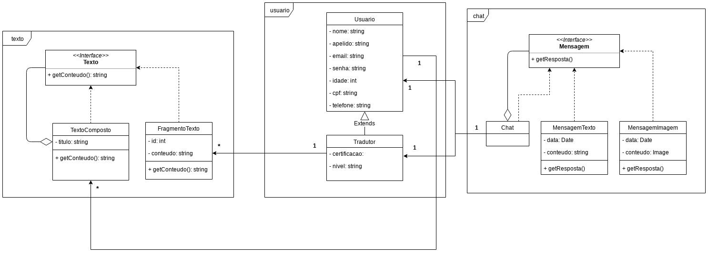

Documento de Arquitetura
Histórico de Revisão:
| Data | Versão | Descrição | Autor |
|---|---|---|---|
| 31/03/2019 | 0.1 | Adicionando o Template do documento de arquitetura | Victor Hugo |
| 01/04/2019 | 0.2 | Modificando Template para preenchimento | Alexandre Miguel |
| 09/04/2019 | 0.3 | Adicionando Definições, Acrônimos e Abreviações | Letícia Meneses |
| 09/04/2019 | 0.4 | Adicionando Introdução e Requisitos e Restrições arquiteturais | Gabriela Guedes |
| 10/04/2019 | 0.5 | Adicionando informações de Dimensionamento e Performance e de Qualidade | Alexandre Miguel |
| 11/04/2019 | 0.6 | Adicionando escopo do projeto | Helena Goulart |
| 11/04/2019 | 0.7 | Adicionando Diagrama de Classes | Rômulo Souza |
| 11/04/2019 | 0.8 | Adicionando o diagrama de implementação | Victor Hugo |
| 11/04/2019 | 0.9 | Adicionando finalidade do documento | João Robson |
| 22/04/2019 | 0.9.1 | Revisando e Adicionando Descrições de Tópicos | Alexandre Miguel |
| 27/04/2019 | 1.0 | Adicionando informações do Banco de Dados | Alexandre Miguel e Rômulo Souza |
Objetivo do Documento
Este documento tem como objetivo descrever e caracterizar as decisões arquiteturais do projeto Translate.me . A caraterização será feita com enfoque no ambito do software, não levando em conta medições como de performace.
1. Introdução
Este documento visa apresentar a arquitetura de software a ser aplicada no sistema do Translate.me , de forma que facilite a visualização dos requisitos e da estrutura para os envolvidos.
1.1. Finalidade
Este documento apresenta os aspectos arquiteturais do projeto, exibindo como se dará a integração entre os microsserviços que compõem o Back-end e o Front-end . Dessa forma, ele é composto não só de diagramas e abordagens abstratas, mas também de uma visão que trata das tecnologias envolvidas na elaboração do projeto e da forma na qual esses elementos serão incorporados para se obter os requisitos funcionais e não funcionais propostos.
1.2. Escopo
Este documento de arquitetura se aplica ao Translate.me , aplicação desenvolvida na disciplina Arquitetura e Desenho de Software.
1.3. Definições, Acrônimos e Abreviações
UnB - Universidade de Brasília
FGA - Faculdade do Gama
Translate.me - WebApp com finalidade em tradução de textos, ligando tradutor e cliente.
Backend - Parte da aplicação responsável pelo gerenciamento de recursos a serem utilizados no Frontend.
Frontend - Parte da aplicação responsável pelo contato com o usuário, consumindo recursos do Backend.
1.4. Referências
Lino - Documentação de arquitetura do projeto de Bot em desenvolvimento na FGA
Design Patterns - Padrões de Design aplicados ao desenvolvimento de software
2. Representação Arquitetural
Modelo de representação dos serviços implementados e as interações estabelecidas entre esses serviços, bem como a natureza dessas interações.

3. Requisitos e Restrições Arquiteturais
| Requisito | Solução |
|---|---|
| Linguagem | O front-end será feito em JavaScript e o back-end, em Python. |
| Plataforma | Serão usadas as plataformas ReactJS para o front-end e Django para o back-end. |
| Segurança | É necessário uma segurança para com os dados, pois todos os usuários irão interagir de forma anônima. Para uma maior segurança das informações, será necessário a utilização de token nas requisições. |
| Persistência | O sistema lidará com uma quantidade grande de dados (informações de usuário e textos em tradução), que para um bom funcionamento do sistema não podem ser perdidos, para a persistência destes dados será utilizado um banco de dados relacional PostgreSQL . |
| Arquitetura | Será feita uma arquitetura de microsserviços, para um melhor funcionamento e desempenho do sistema, já que não serão dependentes entre si |
4. Visão Lógica
Modelagens conforme padrão UML que representam os aspectos arquiteturais do sistema, como as classes utilizadas, as camadas e pacotes da aplicação e a visão da implementação de cada serviço.
4.1 Diagrama de Classes

4.2. Visão Geral de Camadas e Pacotes

5. Visão de implementação

6. Dimensionamento e Performance
Seção responsável pela estimativa em valores quantizados do desempenho dos módulos da arquitetura, bem como de sua performance em execução, conforme a análise qualitativa estabelecida no Documento de Requisitos Não Funcionais.
6.1. Volume
De forma geral, o sistema deve permitir que o fluxo de usuários de ambos os tipos tenham acesso, otimizando acessos de usuários autores para velocidade enquanto dispõe de uma quantidade maior de acessos a usuários tradutores, que representam maior tempo de atividade e em maior número de acesso aos sistemas, com uma escala 1 : 4 em termos de autores e tradutores. Assim, é possível montar a seguinte tabela de estimativas para volumes, traçando paralelos entre usuários tradutores e usuários autores.
| - | Autores | Tradutores | Total |
|---|---|---|---|
| Número de Usuários | 400 | 1600 | 2000 |
| Número de Acessos Diários por usuário | 1 - 5 | 7 - 15 | 8 - 20 |
| Tempo de Sessão de Usuário | 15 - 50 minutos | 50 minutos - 1 hora e 20 minutos | 33 minutos - 1 hora |
6.2. Performance
Para o correto funcionamento do sistema, a performance deve ser rápida e com a conclusão de funcionalidades como o upload de textos em até 1 minuto, para textos com mais de 200 páginas, bem como respostas eficientes da utilização de sistemas como a separação de fragmentos e o envio do texto para tradução.
7. Qualidade
Os seguintes itens conferem ao sistema aspectos de qualidade, bem como a descrição da abordagem realizada para satisfazer esses aspectos.
| Item | Solução | Descrição |
|---|---|---|
| Escalabilidade | Arquietura de Microsserviços | Em prol de permitir que o sistema evolua sem grandes gargalos, o sistema de modularização aplicado pela arquitetura de microsserviços propicia alterações no funcionamento de um serviço sem alterações em grande escala nos demais serviços relacionados, permitindo modificações mais pontuais e uma integração facilitada do sistema. |
| Confiabilidade | Manutenção Periódica e Modularização do Sistema | Pela modularização do sistema permitir menor impacto de um microsserviço no funcionamento de outro, a prática de manutenções periódicas permite a solução de problemas de forma pontual e sem impedir o funcionamento de demais serviços, ao contrário de abordagens monolíticas |
| Segurança | Encriptação de dados e Servidor Remoto | Para garantir a segurança de informações sensíveis, a abordagem utilizada será a encriptação de dados e utilização de Hashes, permitindo que informações puras não trafeguem por mais módulos da aplicação do que o necessário, armazenando-as no servidor remoto e acessando-as por meio das hashes. |
| Portabilidade | Arquitetura de Microsserviços | A Utilização da arquitetura de microsserviços permite o desenvolvimento do Backend da aplicação desacoplado do Frontend, permitindo então que esse Frontend seja adaptado para diferentes plataformas, com um funcionamento equivalente conforme o que foi implementado no Backend, contando ainda com a independência de funcionamento de cada serviço. |
8. Banco de Dados
8.1. Modelo Entidade - Relacionamento (ME-R)
Dada a arquitetura do projeto, modularizada por microsserviços, as entidades se referem ao que será requerido e utilizado em cada módulo
8.1.1. Entidades e Atributos
Certificação
- CERTIFICACAO (idCertificacao , idioma, escola, tipoCertificacao)
Autenticação
-
AUTOR (idAutor , cpf, nome, apelido, email, senha)
-
TRADUTOR (idAutor, idTradutor , cpf, nome, apelido, email, senha, nivel, {lingua})
Tradução
-
TEXTO (idTexto , contexto, linguaOrigem , linguaDestino)
-
FRAGMENTO (idFragmento , contexto, linguaOrigem , linguaDestino, conteudo, valor)
Chat
-
CHAT (idChat , apelidoTradutor, apelidoAutor)
-
FRAGMENTO (idMessage , conteudo, data)
8.1.2. Relacionamentos
-
TRADUTOR - detem - CERTIFICACAO
Um tradutor detêm nenhuma ou várias certificações, mas cada certificação é detida somente por um tradutor.
Cardinalidade: 1:n -
AUTOR - participa - CHAT
Um autor participa de nenhum ou de vários chats, mas cada chat possui um único autor.
Cardinalidade: 1:n -
AUTOR - escreve - CHAT
Um autor escreve nenhuma ou várias mensagens, mas cada mensagem é escrita por somente um autor. Cardinalidade: 1:n -
TRADUTOR - traduz - FRAGMENTO
Um tradutor pode traduzir nenhum ou vários fragmentos, mas cada fragmento é traduzido por somente um tradutor. Cardinalidade: 1:n -
TEXTO - contem - FRAGMENTO
Um texto contém um ou vários fragmentos, e cada fragmento está contido em um único texto. Cardinalidade: 1:n -
AUTOR - possui - TEXTO
Um autor possui nenhum ou vários textos, mas cada texto é possuído por um único autor. Cardinalidade: 1:n
8.3. Diagrama Entidade - Relacionamento (DE-R)